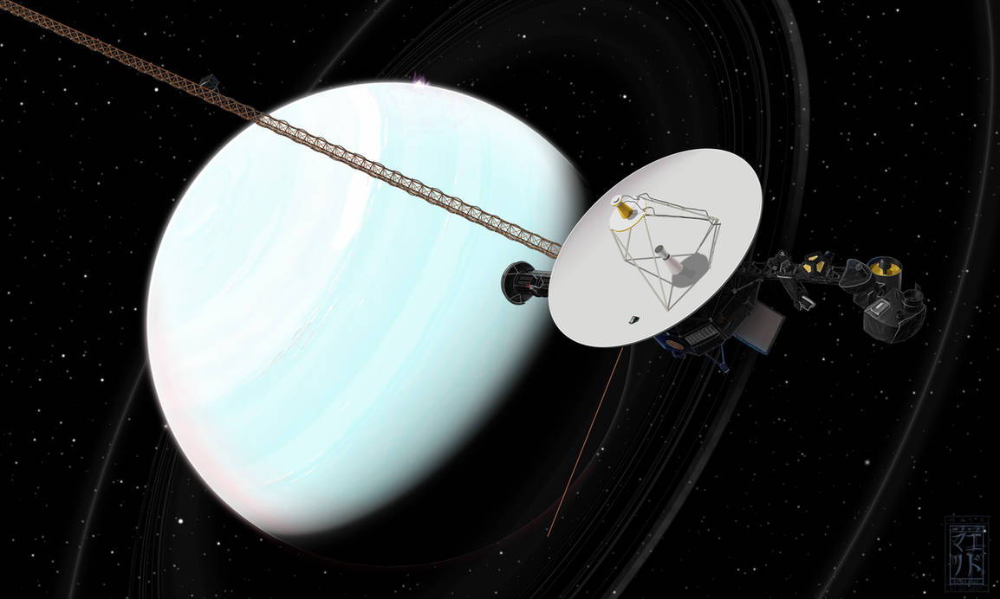

Voyager 2 (1986)
Voyager 2 is the only spacecraft to visit Uranus, providing key data on its atmosphere, rings, and moons.
 uranus missionNo Current Mission
There are no ongoing missions to Uranus at present, but interest in new missions continues to grow.
 no mission
no mission
Proposed Mission: Uranus Orbiter
A proposed NASA mission to study Uranus' atmosphere, magnetic field, and its unique moons.
 uranus Uranus_Orbiter_and_Probe
uranus Uranus_Orbiter_and_Probe
Ice Giants Mission (Proposed)
This proposed mission aims to explore Uranus and Neptune, focusing on their atmospheres and icy compositions.
 ice gaints
ice gaints